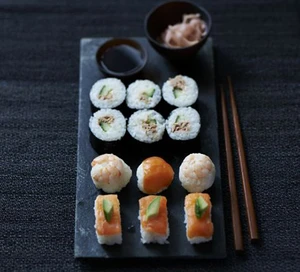

Sushi

Description
This page contains the recipe for a simple Sushi dish.
Acquire the ingredients and follow the steps listed below in order to make some of your own sushi
Also, it is optional (and recommended) to add some of your favorite fillings into the sushi roll before rolling it! This is taken into account
throughout the page and some filling suggestions will be listed
ingredients
- 300g sushi rice
- 100ml rice wine vinegar
- 2 tbsp golden caster sugar
- 25g bag nori (seaweed) sheets
- choose from the following fillings: cucumber strips, smoked salmon, white crabmeat, canned tuna, red pepper, avocado, spring onion
- wasabi (optional)
- pickled ginger
- soy sauce
steps
- Make the sushi rolls: Pat out some rice. Lay a nori sheet on the mat, shiny-side down.
Dip your hands in the vinegared water, then pat handfuls of rice on top in a 1cm
thick layer, leaving the furthest edge from you clear.
- Add the filling: Top the rice with a line of your favourite fillings.
- Roll it up: Lift the edge of the mat over the rice, applying a little pressure to keep everything in a tight roll.
- Stick down the sides like a stamp: When you get to the edge without any rice,
brush with a little water and continue to roll into a tight roll.
- Wrap in cling film: Remove the mat and roll tightly in cling film before cutting the sushi into thick slices,
then unravel the cling film.